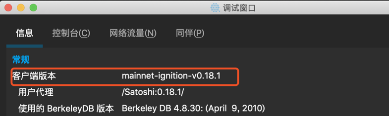
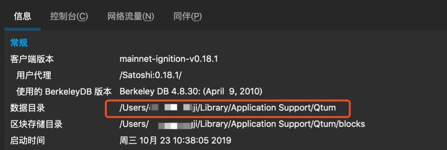

Qtum 钱包升级教程
确认现在钱包版本
操作路径：window-信息
如果版本不是 0.18.1 请参照如下教程；
如果已经是0.18.1依然存在该问题，请直接跳到步骤5。
退出钱包
如果不是 0.18.1 版本的话，请退出钱包。
保存wallet.dat文件
找到Qtum所在安装目录保存wallet.dat文件，该文件默认路径根据操作系统不同以MAC为例位置如下：
下载新版本钱包
前往Qtum官方钱包下载路径：https://qtumeco.io/wallet
根据系统版本选择需要下载的钱包

启动钱包并重新同步区块信息
操作路径：File-Restore wallet-删除区块链数据
等待同步直到完成
预计同步所需时间大约1个小时